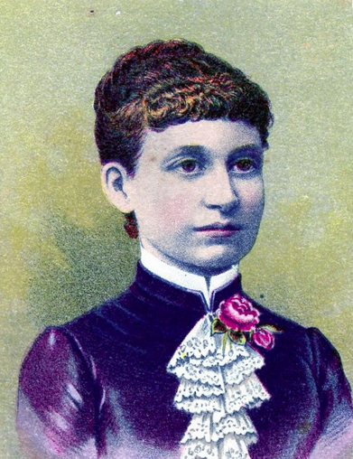

The Life Of...

Sarah Babbitt, though she is primarily known by her middle name, Tabitha, an American inventor born to Seth and Elizabeth Babbitt on the 9th of December, 1779 in Hardwick, Massachusetts. Not much is known about her early life until the start of her membership with the Harvard Shaker community in Massachusetts on August 12th, 1793 at the age of 14. Tabitha lived her life as a quiet and shy weaver in the community, and her watchfulness led her to observe men hard at work in the forest industry, moving her to begin inventing things to make their work easier and more efficient. It is claimed that she was in the process of inventing an improved spinning wheel head and false teeth made of wax when she died in Harvard, Massachusetts on December 10th, 1853, a day after her 74th birthday.